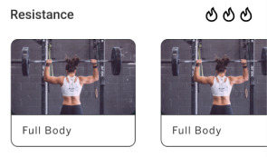
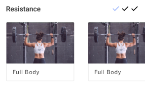
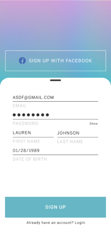

Development
Once I was done creating my wireframes, I brought it to life by incorporating the branding. With the initial hi-fi mockups, I performed three usability tests to get some feedback. Some feedback I had: change icon to send the correct message, update CTA button placement, and fix prototyping issues on the modal screen.
I did A/B testing using UsabilityHub when creating the various mockup versions.
Test 1 - Do you prefer the holographic onboarding pages or the pages with the images in the background? Why?
Out of 15 survey participants, 10 wanted to leave the current holographic background as is because it was more simple, uniform, consistent, less distracting, cleaner, etc. They said the images were too distracting while it added more character. 10/15 chose the holographic background making the test 90% statistically significant.
Test 2 - Should this page of the app be labeled as Coaching or Progress? (Both images are exactly the same EXCEPT the highlighted word in blue in the bottom nav bar) Why?
It was interesting to see that out of 10 survey participants, all 10 chose to change the page label from coaching to progress. Some of the reasons were: progress sounds more personal; the page is more about progress vs coaching; and it tells me where I am in my journey. 10/10 chose the progress label making the test 99% statistically significant.
Test 1 - Would you use a live coaching feature if it was added? You can have 1-on-1 live coaching session through the app on your phone. If you chose 'yes', how would it benefit you?
Out of 12 survey participants, 7 wanted the live coaching feature due to the following reasons: privacy, motivation, great for critiques, live feedback, personalized answers. You can find this within the chat feature with your coach. Press the camera icon which will allow you to have a live video stream or send photos to your coach to get critiques on your form. The first page looks exactly the same, but I added the second and third pages shown below.
Test 2 - The app has a reminder feature from your AI Coach. Would you like 'scheduling your workout time' feature to be added, so it can be sent as a reminder? If you chose 'yes', why?
Out of 13 survey participants, 10 wanted a scheduling feature that enables you to set a reminder to workout. Some of the reasons were: good accountability, good reminder for busy people, more commitment, set goals, habit maker, helps you prepare and relax. You can find the reminders section within your profile account.
Test 3 - What other graphs would you like to see in the Dashboard section? What type of data visualizations would help you on your fitness journey?
There were 9 participants in this survey. The different types of visualizations users wanted to see were: calorie intake/burn together, strength progress (shown in weights lifted over time) and encouraging words/milestones (shown with badges)
Outline & corners
Changed image borders from black to grey and the corner radius
Before | Black border & 10 degrees

After | Grey border & 2 degrees

Changed white font on gradient to grey
Changed font size for legibility
Before | Label disappears & button color stays the same
After | Label stays & button color changes
